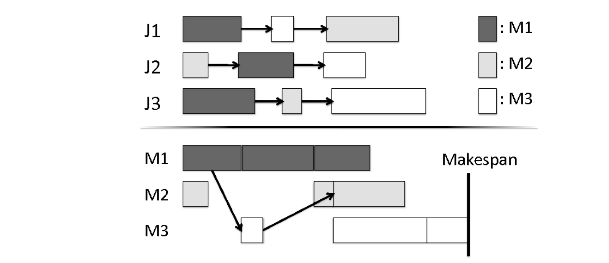
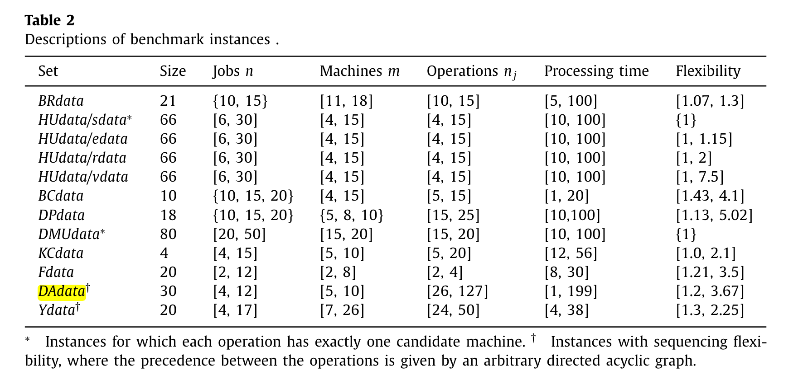
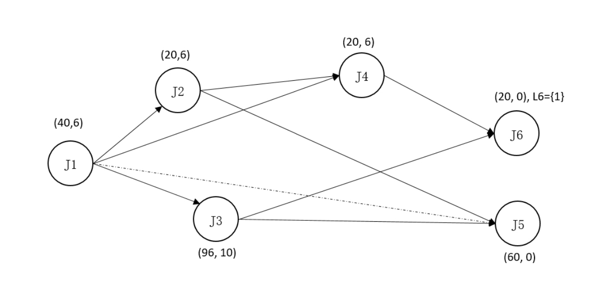

Job Shop Problem (JSP)¶
JSSP 系统学习笔记
从问题定义与 3×3 手算排程开始，沿着11 节专题目录学习析取图、最长路解码、关键块、构造启发式、局部搜索、SA、TS、Shifting Bottleneck 与下界。各节保留待 review 状态；本页继续保留原有 JSP / FJSP 模型，便于对照。
Reference
Paper 1: Wen-Yang Ku and J. Christopher Beck, Mixed Integer Programming Models for Job Shop Scheduling: A Computational Analysis, Computers and Operation Research, http://dx.doi.org/10.1016/j.cor.2016.04.006
问题描述¶
现有 \(n\) 个工作（Jobs），\(j \in J；\)\(m\) 个机器（machines），\(m \in M\)， 每个工作都需要在每台机器上进行加工，但是顺序可能不同。我们把每个任务在每个机器上加工的过程称为一个工序 （Operation）.
-
我们用 \(( \sigma^j_1, \sigma^j_2, ... , \sigma^j_h, ... ,\sigma^j_m)\) 表示工作 \(j\) 的机器加工顺序。其中 \(\sigma^j_h\) 表示工作 \(j\) 的第 \(h\) 道工序所在的机器号。
-
我们记：\(p_{i,j}\) 表示工作 \(j\) 在机器 \(i\) 上的加工时间。
我们需要决定每个任务的加工顺序，从而最小化最后一道工序的完成时间 (Makespans)。
The objective is to find a schedule of \(J\) on \(M\) that minimizes the makespan, i.e., the maximum completion time of the last operation of any job in \(J\). Makespan minimization for the JSP is NP-hard for \(n \geq 3\) and \(m \geq 2\)。
如下图所示，就是一个可行的任务调度方案。

图中有3个工作 Job 1/2/3，需要被安排在3台机器上：M 1/2/3。每个工作都有3道工序。上半部分表示工作的加工顺序约束，下半部分是从机器视角出发，展示每台机器上工作的加工状况。箭头表示工序约束。
3种整数规划 (MIP) 建模¶
析取图模型 (Disjunctive Model)¶
- 决策变量:
\(x_{ij}\) : 工作 \(j\) 在机器 \(i\) 上的开始加工时间，是一个整数。
\(z_{ijk}\) : 0-1变量，表示工作 \(j\) 是否在工作 \(k\) 之前，在机器 \(i\) 上加工。
subject to.
目标函数的含义是：最小化最晚完成工序的时间。
\(V\) 是一个极大值，在模型中可以取 \(\sum_{j\in J} \sum_{i \in M }p_{ij}\)。因为每个机器上的加工时间必不可能小于所有加工时间求总和的情况。
| 约束编号 | 含义 |
|---|---|
| 1 | 每个工作的开始加工时间非负 |
| 2 | 工序加工顺序约束 (precedence constraints)，确保Job按照工序顺序加工 |
| 3 | 析取约束，同一时刻两个任务不能被分配到同一个机器上 |
| 4 | 析取约束，同一时刻两个任务不能被分配到同一个机器上 |
| 5 | 最晚完成时间约束 |
| 6 | \(z_{ijk}\) 是0-1变量 |
类似3/4这种约束，求解器里有一些加速方法，参考CPLEX indicator constraint.
时间索引模型 (Time-indexed Model)¶
- 决策变量：
\(x_{ijt}\) 0-1变量，如果工作 \(j\) 在时刻 \(t\) 于机器 \(i\) 上开始加工，则为 1，否则为 0.
subject to.
目标函数不变。
| 约束编号 | 含义 |
|---|---|
| 7 | 每个工作只在每个机器上加工一次 |
| 8 | 最晚完成时间约束 |
| 9 | 在每个时间时间点，每台机器只能加工一个工作，不能超额加工 (Over-capacitated) |
| 10 | 加工顺序约束，保证工作按照给定顺序完成加工 |
基于排序的模型 (Rank-based model)¶
- 决策变量：
\(x_{ijk}\)： 0-1变量，如果工作 \(j\) 被安排在机器 \(i\) 的第 \(k\) 个位置上，则为 1，否则为 0。
\(h_{ik}\)：机器 \(i\) 上的第 \(k\) 个位置上的工作的开始加工时间。
除此之外，我们引入参数 \(r_{ijk}\)，0-1变量，表示工作 \(j\) 的第 \(k\) 个工序是否需要机器 \(i\)。如果需要，则为 1. 否则为 0.
subject to.
| 约束编号 | 含义 |
|---|---|
| 12 | 每个机器的每个位置都只能放一个工作 |
| 13 | 每个任务只只占据每个机器的一个位置 |
| 14 | 约束一台机器上一个工作的开始加工时间必须不小于该机器前一个工作的完成时间 |
| 16 | 加工顺序约束 |
| 17 | 最大完成时间约束，用以标记目标函数 |
| 18 | 任何工作在任何机器的位置上的加工开始时间不得小于0 |
FJSP 柔性作业车间调度¶
Review
The flexible job shop scheduling problem: A review, EJOR,Stéphane Dauzère-Pérès, Junwen Ding, Liji Shen, Karim Tamssaouet
https://people.idsia.ch//~monaldo/fjsp.html#Problem
问题描述¶
有一系列工作(Jobs)集合 \(J\)，有一系列机器(Machines)集合 \(\mathcal{R}\)，同时给定一个工序集合（Operations）\(\mathcal{O}\)。每个工作 \(j\) 都是由 \(n_j\) 个连续的工序组成，工序均来自于 \(\mathcal{O}\)。每个工序 \(i \in \mathcal{O}\), 都有一个可加工的机器子集 \(\mathcal{R}_i \subseteq \mathcal{R}\) 。工序 \(i\) 在机器 \(k \in \mathcal{R}_i\) 上的加工时间通过 \(p^k_i\) 给出。
不难发现，给定一个工作，对于组成他的各个工序，都有一个直接的前置工序(direct predecessor)和直接的后置工序(direct successor)。我们用 \(PR(i)\) 和 \(FR(i)\) 分别表示工序 i 的所有前置工序和后置工序。
此外，我们有如下假设：
- 所有的机器在0时刻都是可行的；
- 所有的工作在0时刻也都是可以开始加工的；
- 不允许中断：每个工序一旦开始，就必须在这个机器上加工完毕；
- 一个机器不能在同一时刻有多个工序在加工。
基础模型¶
- 决策变量
\(\alpha^k_i\): 0-1变量，如果工序 \(i\) 被分配到机器 \(k\) 上，则为 1， 否则为 0；
\(\beta_{ij}\): 0-1 变量，如果工序 \(i\) 在工序 \(j\) 之前处理，则为 1， 否则为 0；
其中，\(H\) 是一个极大值。
| 约束编号 | 含义 |
|---|---|
| 20 | 每个工序都被分配到某一台可选的机器上 |
| 21 | 约束同一个工作的工序的处理顺序，前道工序必须先处理 |
| 22 | 保证同一台机器 \(k\) 上的两道工序的时间是不重叠的 (Overlap)，仅在工序 \((i,j)\) 都被分配到机器 \(k\) 上时，约束生效 |
| 23 | 保证同一台机器 \(k\) 上的两道工序的时间是不重叠的 (Overlap)，仅在工序 \((i,j)\) 都被分配到机器 \(k\) 上时，约束生效 |
| 24 | 最大完成时间约束，用以标记目标函数 |
上述paper还阐述了几个Benchmark的情况，分析了一下每个benchmark的规模，做了一点小的总结。

比如，最后一列Flexibility，就是每个工序的可行机器的平均数量；（the average number of candidate machines for each operation）。
non-linear FJSP / FJSP with DAG¶
这部分是一个私货。对这个做了点简单研究，主要是2024.08打了个华为的比赛 【链接待补充】，虽然啥成果也没有，但是毕竟自己以前从来没做过JSP相关，倒也是有一些探索。
主要参考：Kasapidis Gregory A. et.al., Flexible Job Shop Scheduling Problems with Arbitrary Precedence Graphs. Production and Operations Management (2021), https://doi.org/10.1111/poms.13501
对应最开始的Review文章的6.1节。许多文章对这个概念的描述不同，但是场景实际上是没什么差异的。也就是：
在FJSP中，工序是和工作绑定的。也就是说，假如一个工作有10个工序，那么这10个工序的加工顺序也就定下来了。从工作的角度来看，工序加工顺序是线性的。
但是实际需求中，往往工序之间的加工顺序并不是线性的。比如，工序C必须要等工序A，B都完成才能开始加工，而A，B可以同时并行地在不同的机器上处理，也就是说，工序之间的加工顺序是有向无环图（DAG）。
在这种场景下，往往取消了“工作”的概念，只剩下“工序”的概念。给定一系列“工序”，每个工序都有各自可以加工的机器，这些工序之间存在非线性的先后次序关系。

如图，5工序需要在2/3工序都完成之后才能开始加工，但是，2/3都是在1工序完成后即可开始加工，这意味着可以将2/3并行地进行加工，都加工好了之后再处理工序5.
待补充：析取图法、析取图模型。